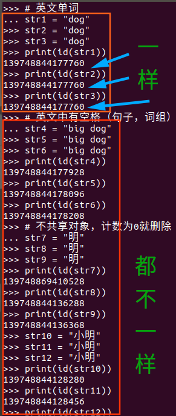

上次知识回顾：https://www.cnblogs.com/dotnetcrazy/p/9278573.html
终于期末考试结束了，聪明的小明同学现在当然是美滋滋的过暑假了，左手一只瓜，右手一本书～正在给老乡小张同学拓展他研究多日的知识点
装饰器这次从C#开始引入，上次刚讲迭代器模式，这次把装饰器模式也带一波（纯Python方向的可以选择性跳过，也可以当扩展）
其实通俗讲就是，给原有对象动态的添加一些额外的职责（毕竟动不动就改类你让其他调用的人咋办？也不符合开放封闭原则是吧～）
举个简单的例子：(https://github.com/lotapp/BaseCode/tree/master/netcore/3_Ext/Decorators)
BaseComponent.cs
/// <summary>
/// 组件的抽象父类
/// </summary>
public abstract class BaseComponent
{
/// <summary>
/// 定义一个登录的抽象方法
/// 其他方法，这边省略
/// </summary>
public abstract string Login();
}
LoginComponent.cs
/// <summary>
/// 默认登录组件（账号+密码）
/// 其他方法省略
/// 友情提醒一下，抽象类里面可以定义非抽象方法
/// </summary>
public class LoginComponent : BaseComponent
{
public override string Login()
{
return "默认账号密码登录";
}
}
默认调用：
static void Main(string[] args)
{
var obj = new LoginComponent();
var str = obj.Login();
Console.WriteLine(str);
}
如果这时候平台需要添加微信第三方登录，怎么办？一般都是用继承来解决，其实还可以通过灵活的装饰器来解决：（好处可以自己体会）
先定义一个通用装饰器（不一定针对登录，注册等等只要在BaseComponent中的都能用）
/// <summary>
/// 装饰器
/// </summary>
public class BaseDecorator : BaseComponent
{
protected BaseComponent _component;
/// <summary>
/// 构造函数
/// </summary>
/// <param name="obj">登录组件对象</param>
protected BaseDecorator(BaseComponent obj)
{
this._component = obj;
}
public override string Login()
{
string str = string.Empty;
if (_component != null) str = _component.Login();
return str;
}
}
现在根据需求添加微信登录：（符合开放封闭原则）
/// <summary>
/// 默认登录组件（账号+密码）
/// 其他方法省略
/// </summary>
public class WeChatLoginDecorator : BaseDecorator
{
public WeChatLoginDecorator(BaseComponent obj) : base(obj)
{
}
/// <summary>
/// 添加微信第三方登录
/// </summary>
/// <returns></returns>
public string WeChatLogin()
{
return "add WeChatLogin";
}
}
调用：（原有系统该怎么用就怎么用，新系统可以使用装饰器来添加新功能）
static void Main(string[] args)
{
#region 登录模块V2
// 实例化登录装饰器
var loginDecorator = new WeChatLoginDecorator(new LoginComponent());
// 原有的登录方法
var str1 = loginDecorator.Login();
// 现在新增的登录方法
var str2 = loginDecorator.WeChatLogin();
Console.WriteLine($"{str1}\n{str2}");
#endregion
}
结果：
默认账号密码登录
add WeChatLogin如果再加入QQ和新浪登录的功能就再添加一个V3版本的装饰器，继承当时V2版本的登录即可（版本迭代特别方便）
/// <summary>
/// 默认登录组件（账号+密码）
/// 其他方法省略
/// </summary>
public class LoginDecoratorV3 : WeChatLoginDecorator
{
public LoginDecoratorV3(BaseComponent obj) : base(obj)
{
}
/// <summary>
/// 添加QQ登录
/// </summary>
/// <returns></returns>
public string QQLogin()
{
return "add QQLogin";
}
/// <summary>
/// 添加新浪登录
/// </summary>
/// <returns></returns>
public string SinaLogin()
{
return "add SinaLogin";
}
}
调用：
static void Main(string[] args)
{
#region 登录模块V3
// 实例化登录装饰器
var loginDecoratorV3 = new LoginDecoratorV3(new LoginComponent());
// 原有的登录方法
var v1 = loginDecoratorV3.Login();
// 第二个版本迭代中的微信登录
var v2 = loginDecoratorV3.WeChatLogin();
// 新增的QQ和新浪登录
var qqLogin = loginDecoratorV3.QQLogin();
var sinaLogin = loginDecoratorV3.SinaLogin();
Console.WriteLine($"{v1}\n{v2}\n{qqLogin}\n{sinaLogin}");
#endregion
}
结果：
默认账号密码登录
add WeChatLogin
add QQLogin
add SinaLogin其实还有很多用处，比如原有系统缓存这块当时考虑不到，现在并发来了，已经上线了，原有代码又不太敢大幅度修改，这时候装饰器就很方便的给某些功能添加点缓存、测试、日记等等系列功能(AOP里面很多这种概念)
实际场景说的已经很明白了，其他的自己摸索一下吧
# 添加一个闭包
def cache(func):
def decorator():
print("给功能添加了缓存")
if True:
pass
else:
func()# 如果缓存失效则读取数据库获取新的数据
return decorator
def get_data():
print("直接数据库读取数据")
def main():
f1 = cache(get_data)
f1()
print(type(f1))
if __name__ == '__main__':
main()
小张问道：“怎么也这么麻烦啊，C#的那个我就有点晕了，怎么Python也这样啊？”f1 = cache(get_data) f1()
小明哈哈一笑道：“人生苦短，我用Python～这句话可不是随便说着玩的，来来来，看看Python的语法糖”：
def cache(func):
def wrapper():
print("给功能添加了缓存")
if True:
pass
else:
func() # 如果缓存失效则读取数据库获取新的数据
return wrapper
@cache
def get_data():
print("直接数据库读取数据")
def main():
get_data()
if __name__ == '__main__':
main()
其实
@cache
def get_data()
等价于
# 把f1改成函数名字罢了。可以这么理解：get_data重写指向了一个新函数
get_data = cache(get_data)
小张同学瞪了瞪眼睛，努力回想着以前的知识点，然后脱口而出：“这不是我们之前讲的属性装饰器吗？而且好方便啊，这完全符合开放封闭原则啊！“
class Student(object):
def __init__(self, name, age):
# 一般需要用到的属性都直接放在__init__里面了
self.name = name
self.age = age
@property
def name(self):
return self.__name
@name.setter
def name(self, name):
self.__name = name
@property
def age(self):
return self.__age
@age.setter
def age(self, age):
if age > 0:
self.__age = age
else:
print("age must > 0")
def show(self):
print("name:%s,age:%s" % (self.name, self.age))
小明也愣了愣，说道：”也对哦，你不说我都忘了，我们学习面向对象三大特性的时候经常用呢，怪不得这么熟悉呢“
随后又嘀咕了一句：”我怎么不知道开放封闭原则...“
小张嘲笑道：”这你都不知道？对扩展开放，对已经实现的代码封闭嘛～“
# 需要注意一点
def cache(func):
print("装饰器开始装饰")
def wrapper():
print("给功能添加了缓存")
if True:
pass
else:
func() # 如果缓存失效则读取数据库获取新的数据
return wrapper
@cache # 当你写这个的时候，装饰器就开始装饰了，闭包里面的功能是你调用的时候执行
def get_data():
print("直接数据库读取数据")
小明赶紧扯开话题，”咳咳，我们接下来我们接着讲装饰器"
小张问道，像上面那个第三方登录的案例，想加多少加多少，Python怎么办呢？
小明一笑而过～
现在项目又升级了，要求每次调用都要打印一下日记信息，方便以后纠错，小张先用自己的理解打下了这段代码，然后像小明请教：
def log(func):
def wrapper():
print("输出日记信息")
cache(func)()
return wrapper
def cache(func):
def wrapper():
print("给功能添加了缓存")
if True:
pass
else:
func() # 如果缓存失效则读取数据库获取新的数据
return wrapper
@log
def get_data():
print("直接数据库读取数据")
def main():
get_data()
if __name__ == '__main__':
main()
小明刚美滋滋的喝着口口可乐呢，看到代码后一不小心喷了小张一脸，然后尴尬的说道：“Python又不是只能装饰一个装饰器，来看看我的代码”：
def log(func):
print("开始装饰Log模块")
def wrapper():
print("输出日记信息")
func()
return wrapper
def cache(func):
print("开始装饰Cache模块")
def wrapper():
print("给功能添加了缓存")
if True:
pass
else:
func() # 如果缓存失效则读取数据库获取新的数据
return wrapper
@log
@cache
def get_data():
print("直接数据库读取数据")
def main():
get_data()
if __name__ == '__main__':
main()
小张耐心的看完了代码，然后说道：“咦，我发现它装饰的时候是从下往上装饰，执行的时候是从上往下啊？执行的时候程序本来就是从上往下，按照道理应该是从上往下装饰啊？”
小明神秘的说道：“你猜啊～你可以把它理解为寄快递和拆快递”
小张兴奋的跳起来了：
装饰器：装快递，先包装里面的物品，然后再加个盒子。执行装饰器：拆快递，先拆外面的包装再拆里面的～简直妙不可言啊
小明继续讲述他哥哥的血泪历史：
需求时刻在变，系统使用范围更广了，为了不砸场子，抠门的老板决定每年多花5W在技术研发的硬件支持上，这下子技术部老开心了，想想以前前端只能通过CDN和HTTP请求来缓存，后端只能依赖页面缓存和数据库缓存就心塞，于是赶紧新增加一台Redis的云服务器。为了以后和现在缓存代码得变一变了，需要支持指定的缓存数据库：（如果不是维护别人搞的老项目，你这么玩保证被打死，开发的时候老老实实的工厂模式搞起）
带参数的装饰器一般都是用来记录logo日记比较多，自己开发知道debug模式，生产指定except模式等等
# 可以理解为，在原来的外面套了一层
def cache(cache_name):
def decorator(func):
def wrapper():
if cache_name == "redis":
print("给功能添加了Redis缓存")
elif cache_name == "memcache":
pass
else:
func()
return wrapper
return decorator
@cache("redis") # 相当于是：get_data = cache(”redis“)(get_data)
def get_data():
print("直接数据库读取数据")
def main():
get_data()
if __name__ == '__main__':
main()
小张很高兴，然后练了练手，然后质问小明道：”你是不是藏了一手！“
代码如下：
def log(func):
def inner():
print("%s log_info..." % func.__name__)
func()
return inner
@log
def login_in(name_str, pass_str):
return "欢迎登录：%s" % (name_str)
@log
def login_out():
print("已经退出登录")
@log
def get_data(id):
print("%s:data xxx" % id)
def main():
login_out()
get_data(1)
print(login_in("小明", "xxx"))
if __name__ == '__main__':
main()
小明尴尬的笑了下，然后赶紧倾囊相授，定义一个通用的装饰器：（传参数就在外面套一层）
def log(func):
@functools.wraps(func) # 签名下面一个案例就会讲
def wrapper(*args,**kv):
"""可变参 + 关键字参数"""
print("%s log_info..." % func.__name__)
return func(*args,**kv)
return wrapper
这部分知识如果忘记了可以回顾一下，我们之前讲的函数系列：https://www.cnblogs.com/dotnetcrazy/p/9175950.html
def log(func):
# 可变参 + 关键字参数
def wrapper(*args,**kv):
print("%s log_info..." % func.__name__)
return func(*args,**kv)
return wrapper
@log
def login_in(name_str, pass_str):
return "欢迎登录：%s" % (name_str)
@log
def login_out():
print("已经退出登录")
@log
def get_data(id):
print("%s:data xxx" % id)
def main():
login_out()
get_data(1)
print(login_in("小明", "xxx"))
if __name__ == '__main__':
main()
# 添加一个闭包
def cache(func):
def wrapper(*args,**kv):
if True:
print("缓存尚未失效：直接返回缓存数据")
else:
func(*args,**kv)
return wrapper
def get_data(id):
"""获取数据"""
print("通过%d直接数据库读取数据"%id)
# 进行装饰
get_data = cache(get_data)
# 调用原有名称的函数
get_data(110)
# 发现虽然函数调用时候的名字没有变
# 但是内部签名却变成了闭包里面的函数名了
print(get_data.__name__)
print(get_data.__doc__)
# print(get_data.__annotations__)
发现虽然函数调用时候的名字没有变，但是内部签名却变成了闭包里面的函数名了！
玩过逆向的人都知道，像你修改了apk文件，它看似一样，但签名就变了，得再处理才可能绕过原来的一些自效验的验证措施
这边一样的道理，你写了一个装饰器作用在某个函数上，但是这个函数的重要的元信息比如名字、文档字符串、注解和参数签名都丢失了。
functools里面的wraps就帮我们干了这个事情（之前讲模块的时候引入了functools，随后讲衍生的时候用了里面的偏函数，这边讲讲wraps）
上面代码改改：
from functools import wraps
# 添加一个闭包
def cache(func):
@wraps(func)
def wrapper(*args,**kv):
if True:
print("缓存尚未失效：直接返回缓存数据")
else:
func(*args,**kv)
return wrapper
def get_data(id):
"""获取数据"""
print("通过%d直接数据库读取数据"%id)
# 进行装饰
get_data = cache(get_data)
# 调用原有名称的函数
get_data(110)
# 签名已然一致
print(get_data.__name__)
print(get_data.__doc__)
# print(get_data.__annotations__)
另外：@wraps有一个重要特征是它能让你通过属性 __wrapped__ 直接访问被包装函数，eg：
get_data.__wrapped__(100)
import logging
from functools import wraps, partial
def logged(func=None, *, level=logging.DEBUG, name=None, message=None):
if func is None:
return partial(logged, level=level, name=name, message=message)
logname = name if name else func.__module__
log = logging.getLogger(logname)
logmsg = message if message else func.__name__
@wraps(func)
def wrapper(*args, **kwargs):
log.log(level, logmsg)
return func(*args, **kwargs)
return wrapper
@logged
def add(x, y):
return x + y
@logged(level=logging.CRITICAL, name='测试')
def get_data():
print("读数据ing")
def main():
add(1,2)
get_data()
if __name__ == '__main__':
main()
在类里面定义装饰器很简单，但是你首先要确认它的使用方式。比如到底是作为一个实例方法还是类方法：（别忘记写self和cls）
from functools import wraps
class A(object):
# 实例方法
def decorator1(self, func):
@wraps(func)
def wrapper(*args, **kwargs):
print("实例方法装饰器")
return func(*args, **kwargs)
return wrapper
# 类方法
@classmethod
def decorator2(cls, func):
@wraps(func)
def wrapper(*args, **kwargs):
print("类方法装饰器")
return func(*args, **kwargs)
return wrapper
# 装饰方式不一样
a = A()
@a.decorator1 # 实例方法调用
def test1():
pass
@A.decorator2 # 类方法调用
def test2():
pass
# 调用一下
test1()
test2()
在涉及到继承的时候。 例如，假设你想让在A中定义的装饰器作用在子类B中。你需要像下面这样写：
class B(A):
@A.decorator2
def test(self):
pass
也就是说，装饰器要被定义成类方法并且你必须显式的使用父类名去调用它。
你不能使用 @B.decorator2 ，因为在方法定义时，这个类B还没有被创建。
看这个之前，我们先来看看怎么把类当函数一样使用：
class A(object):
def __call__(self):
print("让类对象能像函数一样调用的～魔法方法")
def main():
a = A()
a()
if __name__ == '__main__':
main()
重载这些魔法方法一般会改变对象的内部行为。上面这个例子就让一个类对象拥有了被调用的行为。
装饰器函数其实是这样一个接口约束，它必须接受一个callable对象作为参数，然后返回一个callable对象。
在Python中一般callable对象都是函数，但也有例外。只要某个对象重写了 __call__() 方法，那么这个对象就是callable的
用类来实现呢？我们可以让类的构造函数__init__()接受一个函数，然后重载__call__()并返回一个函数，也可以达到装饰器函数的效果
我们拿之前说的通用装饰器的例子继续说：（一般来说装饰器就定义成方法，然后给需要添加的函数或者类方法添加就基本够用了）
from functools import wraps
class Log(object):
def __init__(self, func):
wraps(func)(self) # @wraps(func) 访问不到，所以用这种方式
self.__func = func
def __call__(self, *args, **kvs):
print("%s log_info..." % self.__func.__name__)
return self.__func(*args, **kvs)
@Log # 相当于 login_in=Log(login_in)
def login_in(name_str, pass_str):
return "欢迎登录：%s" % (name_str)
@Log
def login_out():
print("已经退出登录")
@Log
def get_data(id):
print("%s:data xxx" % id)
def main():
login_out()
get_data(1)
print(login_in("小明", "xxx"))
if __name__ == '__main__':
main()
对类进行装饰的测试：（以上一个案例为例）
装饰实例方法的时候容易出现莫名其妙的错误，所以一般加上get方法（反射系列的稍后会讲）
eg：show() missing 1 required positional argument: 'self'
完整写法：（你可以去除__get__试试）
import types
from functools import wraps
class Log(object):
def __init__(self, func):
wraps(func)(self) # @wraps(func) 访问不到，所以用这种方式
self.__func = func
def __call__(self, *args, **kvs):
print("%s log_info..." % self.__func.__name__)
return self.__func(*args, **kvs)
# 装饰实例方法的时候容易出现莫名其妙的错误，所以一般加上get方法
# eg：show() missing 1 required positional argument: 'self'
def __get__(self, instance, cls):
if instance is None:
return self
else:
return types.MethodType(self, instance)
class LoginComponent(object):
def __init__(self, name):
self.__name = name
@Log
def show(self):
"""实例方法"""
print("欢迎你：%s" % self.__name)
@classmethod
@Log # 写在下面（"从下往上装，从上往下拆"）
def login_in(cls):
"""类方法"""
print("登录ing")
@staticmethod
@Log
def show_news():
"""静态方法"""
print("今天的新闻是...")
def main():
LoginComponent.login_in()
LoginComponent.show_news()
login = LoginComponent("小明")
login.show()
if __name__ == '__main__':
main()
更多的可以参考如下链接：
Python中的__init__()和__call__()函数
看着小张准备回家换衣服了，小明有点失落，又有点孤单，于是说道：“逗逼张，你还要听吗？我准备讲类相关的知识了，这些可是我课后自学的哦～”
小张转了转身，一念间就留了下来～
类相关的基础知识如果忘记，可以查看之前的文章：https://www.cnblogs.com/dotnetcrazy/p/9202988.html
当我们定义了一个class，创建了一个class的实例后，我们可以给该实例绑定任何属性和方法，这就是动态语言的灵活性：
# 定义一个类
class Person(object):
def __init__(self, name):
self.__name = name
def show(self):
print("中国欢迎你～", self.__name)
xiaoming = Person("小明")
xiaoming.show() # 正常调用
# 给实例动态添加一个属性
xiaoming.age = 22
print(xiaoming.age)
# 其他实例是访问不到这个属性的
xiaopan = Person("小潘")
xiaopan.age
"这个以前不是讲过嘛，动态添加属性，还有没有啥我不知道的知识了？"小张不屑的说道.
小明故作悬疑，抬头看着小张说道：“你知道怎么添加类属性吗？知道怎么添加方法吗？”
小张沉默不语，默默的看着小明讲课，随后心里想到：“这个坑货，话也不说全，还好现在是夏天，不然我早着凉了”
要想添加其他实例都可以访问的属性，可以给类添加一个类属性，用法和上面差不多，只是把对象改成类。
来看个案例：
# 给类动态添加一个属性
Person.age = 22
xiaoming = Person("小明")
print(xiaoming.age)
xiaopan = Person("小潘")
print(xiaopan.age)
小张，还记得讲装饰器的时候有这么一句代码吗？
types.MethodType(self, instance)
小张："记得当时用类装饰实例方法的时候出现了问题，然后才加的？"
对头，以上面Person类为例，来一起看怎么动态添加方法
import types
class Person(object):
def __init__(self, name):
self.__name = name
def test(self):
print("测试一下")
def main():
xiaoming = Person("小明")
xiaoming.test = types.MethodType(test, xiaoming)
xiaoming.test()
if __name__ == '__main__':
main()
你可以思考一下，为什么必须通过types.MethodType才行？（提示：self）
注意一点，当你在新方法中调用类中私有方法时就会出问题
其实这个本质相当于通过实例对象调用里面公开属性
import types
class Person(object):
def __init__(self, name):
self.__name = name
# 一样的代码，只是调用了私有属性
def test(self):
print("中国欢迎你,%s" % self.__name)
def main():
xiaoming = Person("小明")
xiaoming.test = types.MethodType(test, xiaoming)
xiaoming.test() # 其实这个本质相当于通过实例对象调用里面公开属性
if __name__ == '__main__':
main()
看一下类方法和静态方法的案例：
# 类方法案例
class Person(object):
pass
@classmethod
def test(cls):
print(cls)
def main():
Person.test = test # 直接赋值即可
xiaoming = Person()
xiaoming.test()
if __name__ == '__main__':
main()
# 静态方法案例
class Person(object):
pass
@staticmethod
def test():
print("test")
def main():
Person.test = test
xiaoming = Person()
xiaoming.test()
if __name__ == '__main__':
main()
# 定义一个类
class Person(object):
__slots__ = ("age", "name") # 用tuple定义允许绑定的属性名称
def show(self):
print("中国欢迎你～")
xiaoming = Person()
xiaoming.name="小明"
xiaoming.age = 22
xiaoming.qq = 110 # 不允许的属性就添加不了
说几个测试后的结论：
__slots__不一定是元组，你用列表也一样（推荐和官方一致）# 列表定义__slots__不会报错
class Person(object):
__slots__ = ["__name", "age", "gender"]
def __init__(self, name):
self.__name = name
def show(self):
print("中国欢迎你～")
xiaoming = Person("小明")
xiaoming.age = 22
xiaoming.gender = "男"
# 注意一个东西，如果你定义的私有属性不在元组内，也会报错
class Person(object):
__slots__ = ("age")
def __init__(self, name):
self.__name = name
def show(self):
print("中国欢迎你～")
xiaoming = Person("小明")
xiaoming.age = 22
这个限制对实例方法一样有效，再复习下给实例对象添加方法：
import types
class Person(object):
__slots__ = ("__name", "age", "test")
def __init__(self, name):
self.__name = name
def show(self):
print("中国欢迎你～")
def test(self):
print("test")
xiaoming = Person("小明")
xiaoming.age = 22
xiaoming.test = types.MethodType(test, xiaoming)
xiaoming.test()
看看被限制之后：（Python中定义的方法相当于定义了一个属性，然后指向了定义的函数）
# 这个限制对实例方法一样有效
import types
class Person(object):
__slots__ = ("__name", "age")
def __init__(self, name):
self.__name = name
def show(self):
print("中国欢迎你～")
def test(self):
print("test")
xiaoming = Person("小明")
xiaoming.age = 22
xiaoming.test = types.MethodType(test, xiaoming)
xiaoming.test()
# 类方法案例
class Person(object):
__slots__ = ("name", "age")
pass
@classmethod
def test1(cls):
print("类方法")
@staticmethod
def test2():
print("静态方法")
def main():
Person.qq = 110
Person.test1 = test1 # 类方法
Person.test2 = test2 # 静态方法
xiaoming = Person()
print(xiaoming.qq)
xiaoming.test1()
xiaoming.test2()
if __name__ == '__main__':
main()
class Person(object):
def __init__(self, name):
self.__name = name
def show(self):
print(self.__name)
# 属性拦截器里面不要调用self.方法 or self.属性
def __getattribute__(self, obj):
print("obj:", obj)
if obj == "show":
print("do something")
elif obj == "_Person__name": # 注意这种情况，如果你想要访问私有属性，需要写出类名.属性
print("Log info : xxx")
return object.__getattribute__(self, obj) # 你重写了属性、方法获取的方式，别忘记返回对应的属性
def main():
p = Person("小明")
p.show()
if __name__ == '__main__':
main()
class Person(object):
pass
def main():
xiaoming = Person()
print(type(Person))
print(type(xiaoming))
if __name__ == '__main__':
main()
其实还可以通过 __class__ 来查看创建对象的是谁：
class Person(object):
pass
def main():
xiaoming = Person()
print(Person.__class__)
print(xiaoming.__class__)
if __name__ == '__main__':
main()
小张被小明看的发毛，然后赶紧扯开话题说道：”怎么都是type？难道这个就是接下来准备讲的内容？“
小明点头说道：”是滴～“
我们说class的定义是运行时动态创建的，而创建class的方法就是使用type()函数
那怎么创建呢？以上面那个案例为摸版，来个案例：
类名 = type("类名", 父类们的Tuple, Dict)
def main():
Person = type("Person", (object, ), {})
xiaoming = Person()
print(Person.__class__)
print(xiaoming.__class__)
if __name__ == '__main__':
main()
小张感叹道：”Python的这种‘反射’太过简单了吧，我直接都可以写案例了“
比如，实现如下内容：
class Person(object):
def show(self):
print("父类方法：mmd")
class Student(Person):
gender = "男"
def __init__(self, name):
self.__name = name
def eat(self):
print("%s实例方法：大口吃饭" % self.__name)
@classmethod
def run(cls):
print("我是类方法：跑着上课")
@staticmethod
def sleep():
print("静态方法：晚安")
def main():
print(Student.gender)
xiaoming = Student("小明")
xiaoming.show()
xiaoming.eat()
xiaoming.run()
xiaoming.sleep()
if __name__ == '__main__':
main()
def show(self):
print("父类方法：mmd")
def __init__(self, name):
self.__name = name
def eat(self):
print("%s实例方法：大口吃饭" % self.__name)
@classmethod
def run(cls):
print("我是类方法：跑着上课")
@staticmethod
def sleep():
print("静态方法：晚安")
def main():
Person = type("Person", (object, ), {"show": show})
Student = type(
"Student", (Person, ), {
"gender": "男",
"__init__": __init__,
"eat": eat,
"run": run,
"sleep": sleep
})
print(Student.gender)
xiaoming = Student("小明")
xiaoming.show()
xiaoming.eat()
xiaoming.run()
xiaoming.sleep()
if __name__ == '__main__':
main()
metaclass¶小明又仔细端详了小张一次，然后继续讲到：
当我们定义了类以后，就可以根据这个类创建出实例，所以：先定义类，然后创建实例。
但是如果我们想创建出类呢？那就必须根据metaclass创建出类，所以：先定义metaclass，然后创建类。
总的流程就是：先定义metaclass，再创建类，最后创建实例
type就是Python在背后用来创建所有类的那个元类
小张有点恐慌的看了一眼小明，然后继续听讲
Python2是看看类里面有没有__metaclass__这个属性，有就通过它指向的函数或者方法来创建类
Python3简化了一下，在Class定义的时候就可以指定了，eg:class Person(object, metaclass=type)
# 这三个参数其实就是type对应的三个参数
def create_class(name, bases, attrs):
attrs["name"] = "小明"
return type(name, bases, attrs)
class Person(object, metaclass=create_class):
pass
def main():
# 判断一个对象有没有某个属性
hasattr(Person, "name")
print(Person.name)
if __name__ == '__main__':
main()
其实原类有点像刚刚讲的属性拦截器了，大概流程如下：
来一个正规化的写法，eg：给MyList添加一个add方法（list是append方法，别混淆了）
# metaclass是类的模板，所以必须从`type`类型派生：
class ListMetaclass(type):
def __new__(cls, name, bases, attrs):
attrs['add'] = lambda self, value: self.append(value)
return type.__new__(cls, name, bases, attrs)
class MyList(list, metaclass=ListMetaclass):
pass
def main():
mylist = MyList()
mylist.add("mmd")
print(mylist)
if __name__ == '__main__':
main()
元类一般ORM用的比较多（映射），如果你不编写ORM框架的话，基本上用不到
这方面可以参考这篇文章：尝试编写一个ORM框架
枚举类经常用，代码也很简单，继承一下Enum类就可以了，unique用来防止重复的（重复会提示你）
from enum import Enum, unique
@unique
class StatusEnum(Enum):
# 待审核状态（0）默认
Pendding = 0
# 审核已通过（1）正常
Normal = 1
# 审核不通过（2）未删
Cancel = 2
# 已删除状态（99）假删
Delete = 99
# 调用：
StatusEnum.Delete
# 重复项测试
from enum import Enum, unique
@unique
class StatusEnum(Enum):
# 审核已通过（1）正常
Normal = 1
# 已删除状态（99）假删
Delete = 99
# 重复测试
Test = 99
# 调用：
StatusEnum.Delete
之前写的文章里面有提到过，可以简单回顾一下：(可变类型和不可变类型 引用数的引入)
其实程序员基本上关注，实在要关注的就是怎么显示回收：
import gc # 需要导入gc模块
print(gc.collect()) # 显式垃圾回收
print(gc.garbage) # 看回收了哪些
先看看之前讲可变类型和不可变类型说的一句话：
Python对int类型和较短的字符串进行了缓存，无论声明多少个值相同的变量，实际上都指向同个内存地址
看个案例：
a=10
b=10
c=10
print(id(a))
print(id(b))
print(id(c))
上面的ID都一样，那较短到底是多短呢？
先贴一下逆天的测试结果：（不要在编辑器里面测试，建议进入官方的python3交互模式，用vscode测试的结果不准）
小整数[-5,257)共用对象，常驻内存，不在这个范围内的均创建一个新的对象单个字符共用对象，常驻内存字符串：其实也很好理解，第一个范围是程序员经常用的范围，字符串系列嘛就更正常了，老外肯定不管中文什么的，要是中国人发明的可以常用汉字常驻内存^_^
然后一篇文章里面单词出现频率肯定比词组和句子高，所以都能解释通了
来简单验证一下：

# 257的时候就取不到了，这时候都是不同的ID
# 这个就是所谓的大整数了（每一个大整数，均创建一个新的对象）
a=257
b=257
c=257
print(id(a))
print(id(b))
print(id(c))
# 单个字符
d='a'
e='a'
f='a'
print(id(d))
print(id(e))
print(id(f))
# 英文单词
str1 = "dog"
str2 = "dog"
str3 = "dog"
print(id(str1))
print(id(str2))
print(id(str3))
# 英文中有空格（句子，词组）
str4 = "big dog"
str5 = "big dog"
str6 = "big dog"
print(id(str4))
print(id(str5))
print(id(str6))
# 不共享对象，计数为0就删除
str7 = "明"
str8 = "明"
str9 = "明"
print(id(str7))
print(id(str8))
print(id(str9))
str10 = "小明"
str11 = "小明"
str12 = "小明"
print(id(str10))
print(id(str11))
print(id(str12))
str13 = "小 明"
str14 = "小 明"
str15 = "小 明"
print(id(str10))
print(id(str11))
print(id(str12))
再说说查看引用的时候注意一下：sys.getrefcount的参数object也会占1个引用计数（sys.getrefcount(a)可以查看a对象的引用计数，但是比正常计数大1，因为调用函数的时候传入a，这会让a的引用计数+1）
这个是Python主要的一种垃圾回收方式（计数引用），看看源码：
参考链接：https://github.com/python/cpython/blob/master/Include/object.h
// 实际上没有任何东西被声明为PyObject，但是每个指向Python对象的指针都可以强制转换为PyObject(这是手工制作的继承)
typedef struct _object {
_PyObject_HEAD_EXTRA
Py_ssize_t ob_refcnt; /* 引用计数 */
struct _typeobject *ob_type;
} PyObject;
// 类似地，每个指向可变大小Python对象的指针都可以转换为PyVarObject
typedef struct {
PyObject ob_base;
Py_ssize_t ob_size; /* 可变变量引用计数 */
} PyVarObject;
# 引用计数
import sys
# 定义一个临时类
class Temp(object):
def __del__(self):
print("你被干掉了")
t1 = Temp()
print(sys.getrefcount(t1)) #（结果比实际引用大1）【object也会占1个引用计数】
t2 = t1
print(sys.getrefcount(t1))
print(sys.getrefcount(t2))
del t1
print(sys.getrefcount(t2))
# sys.getrefcount(t1)#被删掉自然没有了
del t2
print("-" * 10)
引用计数基本上可以解决大部分的问题，用起来比较简单，而且实时性比较高（一旦没有引用，内存就直接释放了。不用像其他机制等到特定时机。实时性还带来一个好处：处理回收内存的时间分摊到了平时）
但对于循环引用，或者对于像双向链表这样的方式，就算引用对象删除了，它的计数还是1（相互引用嘛）
所以Python解释器用了另一种方法解决这个：
分代回收（隔代回收）
Python解释器设置了某些阀值，当达到了阀值就进行第一轮回收（大概是有循环引用的-1，然后看两个相互引用的对象现在的引用结果是不是都是0，如果都是0说明没有外部引用，那就是垃圾了），不是垃圾的移到第二个链表里面，当第二轮达到阀值的时候，进行第二轮回收（一轮的也回收下），不是垃圾的"老对象"移到第三个链表里面，当第三轮达到阀值的时候统统回收一波）
gc.get_count() 获取当前自动执行垃圾回收的计数器
gc.get_threshold() 获取的gc模块中自动执行垃圾回收的频率（可以自己设置）默认是：(700, 10, 10)
来看看阀值情况：
import gc
print(gc.get_count())
print(gc.get_threshold())
比如你新创建了1000个对象，才释放20个，就已经超过默认的700阀值，Python第一代检测就上场了(以此类推)
一般能活到最后的都不大可能是垃圾了，比如配置文件之类的，基本上不太改动的(越老越成精嘛)
小张若有所思的说道：
小明左右端详小张，终于忍不住说出了那句话：“小张，你能不能..."
话没说完就被小张打断了：”我是男的，不搞基！就是搞基也只喜欢我们班的培哥！“
小明吃惊的说道：”你想啥呢？我只是看你骨骼清奇，想要收你为徒罢了...“
(完）
在Python中，每个对象都保存了一个称为引用计数的整数值，来追踪到底有多少引用指向了这个对象。无论何时，如果我们程序中的一个变量或其他对象引用了目标对象，Python将会增加这个计数值，而当程序停止使用这个对象，则Python会减少这个计数值。一旦计数值被减到零，Python将会释放这个对象以及回收相关内存空间。
从六十年代开始，计算机科学界就面临了一个严重的理论问题，那就是针对引用计数这种算法来说，如果一个数据结构引用了它自身，即如果这个数据结构是一个循环数据结构，那么某些引用计数值是肯定无法变成零的。
刚刚说到的例子中，我们以一个不是很常见的情况结尾：我们有一个“孤岛”或是一组未使用的、互相指向的对象，但是谁都没有外部引用。换句话说，我们的程序不再使用这些节点对象了，所以我们希望Python的垃圾回收机制能够足够智能去释放这些对象并回收它们占用的内存空间。但是这不可能，因为所有的引用计数都是1而不是0。Python的引用计数算法不能够处理互相指向自己的对象。
这就是为什么Python要引入Generational GC算法的原因！
Python使用一种不同的链表来持续追踪活跃的对象。而不将其称之为“活跃列表”，Python的内部C代码将其称为零代(Generation Zero)。每次当你创建一个对象或其他什么值的时候，Python会将其加入零代链表。
因为循环引用的原因，并且因为你的程序使用了一些比其他对象存在时间更长的对象，从而被分配对象的计数值与被释放对象的计数值之间的差异在逐渐增长。一旦这个差异累计超过某个阈值，则Python的收集机制就启动了，并且触发上边所说到的零代算法，释放“浮动的垃圾”，并且将剩下的对象移动到一代列表。
随着时间的推移，程序所使用的对象逐渐从零代列表移动到一代列表。而Python对于一代列表中对象的处理遵循同样的方法，一旦被分配计数值与被释放计数值累计到达一定阈值，Python会将剩下的活跃对象移动到二代列表。
通过这种方法，你的代码所长期使用的对象，那些你的代码持续访问的活跃对象，会从零代链表转移到一代再转移到二代。通过不同的阈值设置，Python可以在不同的时间间隔处理这些对象。Python处理零代最为频繁，其次是一代然后才是二代。参考链接：